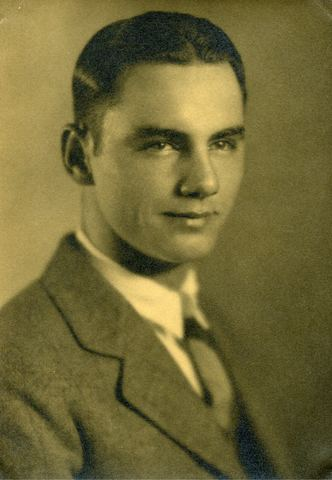

Philip Arthur Saunders
1904–1970
Life events
| Born | 14 Jan 1904 · London, West Virginia Map |
|---|---|
| Lived | 1910 · Kanawha, West Virginia Map  |
| Lived | 1920 · Cabin Creek, West Virginia Map |
| Lived | 1930 · Dunbar, West Virginia Map · Age 26. Single; Relation to Head of House: Brother. |
| Married | 5 Aug 1930 · Annie Laurie Linn Ford · Dunbar, West Virginia Map  |
| Lived | 1934 · Charleston, West Virginia Map  |
| Lived | 1935 · Dunbar, West Virginia Map |
| Lived | 1 Apr 1940 · 1772 Victoria Rd, Cleveland, Ohio Map · Age 36; Married; Head of House. |
| Lived | Aug 1940 - Feb 1944 · 5001 Walther Ave, Maryland Map · Worked at DuPont. |
| Military | 1942 · Baltimore, Maryland Map · Registration Age: 38. Did not serve in WWII because his engineering job was delclared essential.  |
| Lived | Feb - Jun 1944 · 809 West Virginia Ave, Dunbar, West Virginia Map · Linn had Phlebitis and was pregnant with Dabney. They went to stay with Linn's mother. |
| Lived | 1950 · 1866 Taylor Rd, East Cleveland, Ohio Map · Relation to Head: Head; Marital Status: Married |
| Occupation | 2 Jun 1959 · Cleveland, Ohio Map · While working as an engineer for General Electric, he developed and patented a pinning machine for electric light-bulbs in lamps bases. |
| Died | 14 Dec 1970 · Cleveland, Ohio Map |
| Buried | Ford Family section, Athens Cemetery, 507 Cemetery Rd, Princeton, West Virginia Map · . 37.41654, -81.01475 While Linn Ford Saunders resided on “The Ridge" in Flat Top, WV, her husband, Phil’s, ashes were in a small in-ground vault on her property. The urn returned with her when she moved back to Cleveland. It eventually buried in the Ford Family section. The Ford headstone is framed by two overgrown evergreens that obscure the name. Linn Ford Saunders, Phil Saunders share a marker - Phil with a Masonic symbol; Linn with a Phi Beta Kappa one. |
Family
Parents

Robert George Saunders1860–1946
Annette Campbell 'Nettie' Straughan1869–1927
Philip Arthur Saunders1904–1970

Annie Laurie Linn Ford1907–1988
Photos
Philip Arthur Saunders
Philip Arthur Saunders
Philip Arthur Saunders
Robert "Withers" Saunders
Robert George Saunders
Philip Arthur Saunders
Annie Laurie Linn Ford
Philip Arthur Saunders
Annie Laurie Linn Ford
Philip Arthur Saunders
Philip Arthur Saunders